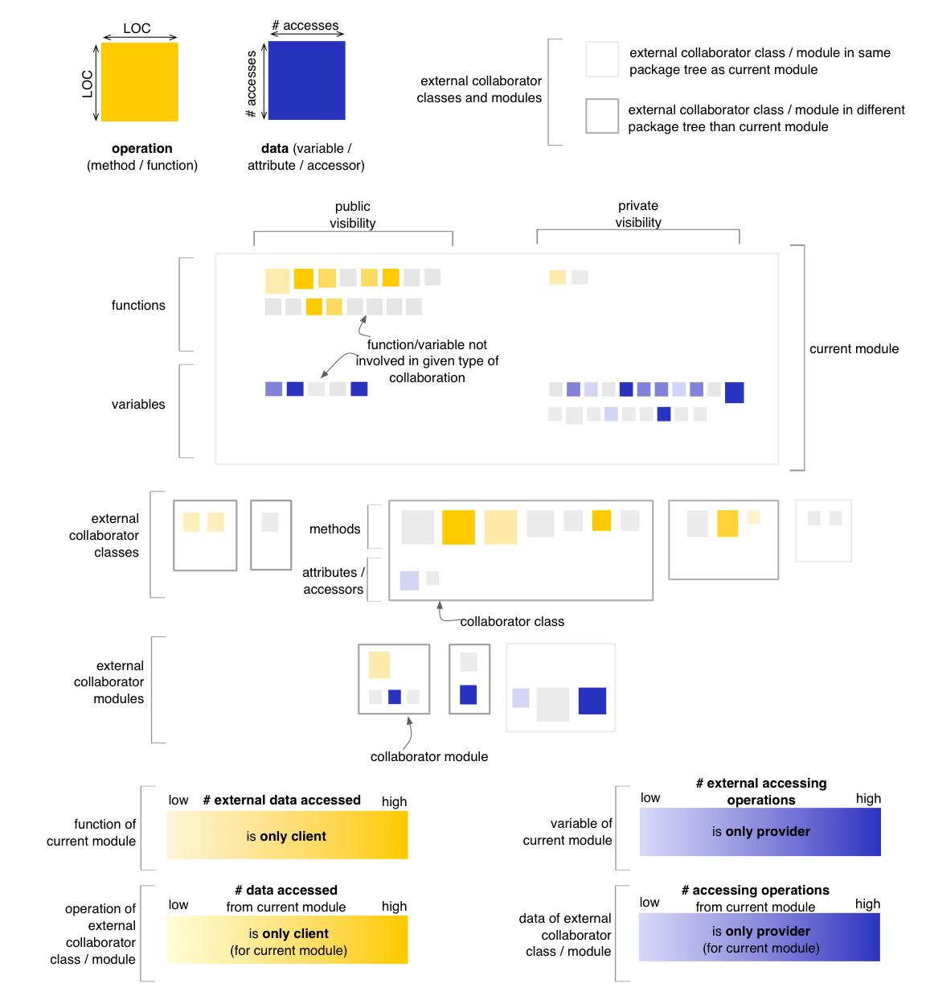
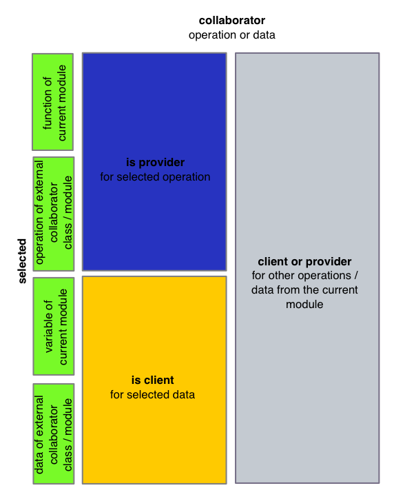

Module Map - Encapsulation Perspective
The Encapsulation Perspective of the Module Map
provides insight into the usage of data from the current module by
external operations, as well as the usage of
external data by the operations of the current module. In the
default state,
the Encapsulation Perspective will render operations using a yellow
color gradient, computed based on the number of distinct external data
accessed by the operation. Note that a call to an accessor method is
also treated as an access to its coresponding attribute. Data is
rendered using a blue color gradient, computed based on the number of
distinct operations accessing it.

Entity selection
The user may select an operation or a data in the map, in
which case the coloring of the map changes to reflect the encapsulation
from
the point of view of the selcted entity. The selected entity is colored
in green (with no borders). All other nodes are colored using
the three colors described below, based on their relation to
the selected entity. In case of the Encapsulation Perspective, this
relation is defined in terms of external data accesses. Calls to
accessor methods are treated as accesses to their corresponding
attribute. Note that the last color shown below is actually reserved
for data / operations with no relation to the selected entity but with
relations
to other data / operations from the current module. This
shade of
gray is slightly darker than the one used for nodes
with no relation to the data / operations of the current module.

Other quality perspectives
Cohesion,
Complexity, Coupling,
Design Flaws
Metrics used
LOC